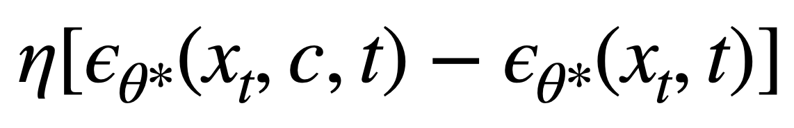
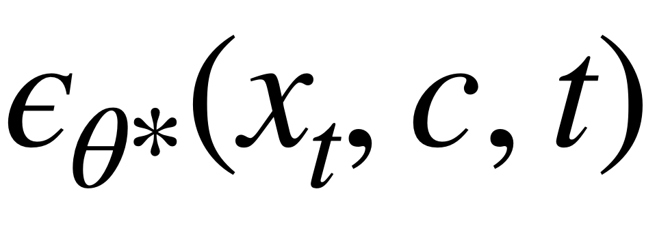
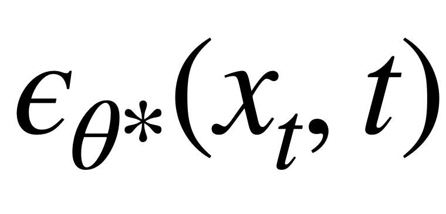
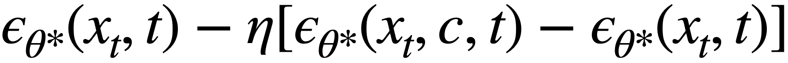
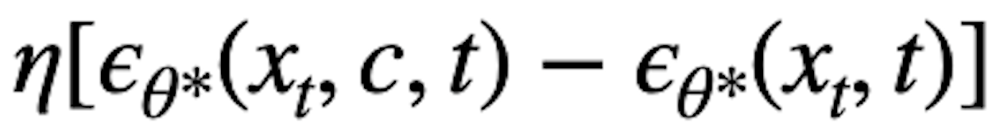
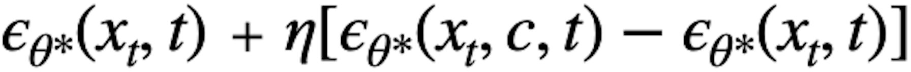

An Analysis of "Erasing Concepts from Diffusion Models"
By: Ali Alyaqoub and Adam Belfki
Original Paper Link: Erasing Concepts from Diffusion Models

Introduction
Significant recent advancements in the field of GenAI have been achieved with Diffusion Models for image generation. Hence, many efforts have been deployed to ensure the generation of appropriate content by avoiding NSFW images and addressing copy-right issues. A number of solutions have been proposed to tackle this problem with different approaches centered around filtering, during either pre-training or post-generation.
In this project we decide to look into a novel method focused on fine-tuning diffusion models using negative guidance as a teacher for the erasure of concepts, which has proven to be more effective than the aforementioned techniques. Most specifically, we are interested in answering the following questions:
- Does this method produce different results on different model sizes? And what could be the ramifications of "forgetting" on smaller models?
- How does the erasure perform when the fine-tuning operation is conducted using unseen data? Is erasure reliant on generalization?
- By erasing a concept, is the model completely unlearning it or is it simply being suppressed from being expressed? In either case, how easy is it to relearn an erased concept? Does it require the same original training effort? Does it produce images of the same quality?
Paper Overview
The paper at hand proposes a method to remove concepts permanently from a diffusion model which makes it very hard to circumvent even if the user has access to the model weights. Previous methods based on filtering datasets are fundamentally costly and not flexible to problems discovered after training while filtering generated content can have unintended consequences on the output quality.
To address these issues, ESD relies on fine-tuning pre-trained diffusion models to minimize the probability of generating certain images linked to a targeted concept and using no additional data. The fine-tuning process involves using several instances of the model with one set of parameters frozen while training the other set of parameters to erase the concept. Partially de-noised images, constrained by the concept, are sampled from the training model while inference is performed twice on the frozen model to predict noise both conditioned and unconditioned on the prompt which combined to negate the predicted noise associated with the targeted concept. This technique modifies the scoring function to move the data distribution to minimize the generation images that can be labeled with the targeted prompt.
Mathematical reasoning behind erasure:
-  represents the predicted noise of Van Gogh with general noise  minus the genreal noise  . This leaves us with the predicted noise of just Van Gogh.
-  represents the general noise minus the predicted noice of just Van Gogh. This leaves us with the noise of everything but Van Gogh. This is our objective that the model is trying to reach.
- Now we arrive at our loss objective. The goal is to minimise the predicted noise of Van Gogh and maximize the noise of everything but Van Gogh.
The degree of success attributed to the erasure of a concept depends on the subset of parameters fine-tuned with a main distinction between cross-attention and non-cross-attention parameters. In the paper, ESD-x refers to the process of fine-tuning the cross-attention parameters which is used to perform controlled erasure specific to the prompt. This method has demonstrated impressive results for specific artistic style removal. On the other hand, ESD-u refers to non-cross-attention fine-tuned parameters which tend to contribute to a broader range of visual concepts when the erasure is required to be independent of the text in the prompt which is crucial for the generation of nudity free content.
The experimental study for this solution on its artistic style removal capabilities involved erasing 5 modern artists and conducting a user study to measure the human perception of the effectiveness of the fine-tuned model compared to other approaches. The study showed that ESD-x had superior results demonstrated by its ability to erase the intended style better but also to keep minimum interference with the other styles. The performance of ESD-u-n for removing explicit content was measure against SLD and SD V.20 and showed that the method proposed in this paper outperforms both inference methods and models trained on filtered datasets.
Erasing an entire object class still involves some limitations represented by a trade-off between complete erasure of a visual concept and interference with other visual concepts.
Methods
Effect on Smaller Models
To test out the models effect on different model sizes, we used the following small stable diffusion and mini stable diffusion models which are smaller implementations of Stable Diffusion. Our method consits of erasing the same concept from each model along side the SD-V1.4 model originally employed by the paper and then analyze the impact of erasing object on the model through inference with multiple prompts with related to the concept being erased.
TALK ABOUT IF THE ARCHITETURE IS THE SAME.TALK ABOUT THE NUMBER OF PARAMETERS IN EACH.Relearning Concepts
We theorize that the model is not completely unlearning a particular concept, but rather suppressing it from being expressed by making the probability of generating images with the concept very low. Since the concept that was erased is still present in the model, it could be possible to relearn concepts by fine-tuning the model with the same objective as the erasure process, but with a constrait that prioritizes the generation of images with the concept we desire. A traditional way to relearn the concept would be to fine-tune the model with data of the concept you desire to relearn. The method we are testing has the benefit of not requiring training data of the concept that was erased as the model will depend on the suppressed knowledge of the concept already in its weights.
- To test this theory out, we will initialize our forzen model to be the model that had the concept erased.
- From this forzen model we will grab the predicted noise of the desired concept .
- The predicted noise of the concept will be combined with the general noise . This is will represent the goal the model is trying to reach.
Results
Effect on Smaller Models
Erasing concepts via ESD-u can have a severe affect on smaller models' ability to generate images. We tested the erasure of the object "car" on the normal, small, amd mini models and found that the smaller models struggled with removing the object. For both the small and the mini model, removing the object by fine-tuning the non-cross attention parameters caused the model to lose its ability to generate proper images and content. Post fine-tuning, the models' ability to generate any image, including those of other objects, was severely hampered indicating that the model was dead. We also tried removing global concepts, like nudity, using the ESD-u method and found that the models produced similar nonsensical images. That being said, the smaller models were able to remove styles from the model using ESD-x. We belive that the smaller models are not able to handle erasure through ESD-u FINISH THOUGHT!!!!!!! ESD-u has ramifications that extend beyond the prompt entered and as a result in smaller models the ramifications are too severe. SAY BETTER!!!!!!!!!
Prompt: "A car zooming through space at the speed of
light."
Erasure Method: "car" using ESD-u
Original SD
SD with car erased using ESD-u
Original Mini SD image
Mini SD with car erased using ESD-u
Prompt: "A cat by a windows Van Gogh style."
Erasure Method: "Van Gogh" using ESD-x
Original SD
SD with Van Gogh erased using ESD-x
Original Mini SD image
Mini SD with Van Gogh erased using ESD-x
Relearning
When we attempted to relearn the concept of Van Gogh and the object car we found that the models were not able to resurface the information that was removed. We believe this is the case because after the original epochs to erase the concept from the model the predicted noise of the concept is so low that relearning the concept from it does not effect the overall model much.
Prompt: "A car zooming through space at the speed of
light."
Relearn Method: "car" using ESD-u
Original SD
SD with car erased using ESD-u
Relearn car
Prompt: "A cat by a windows Van Gogh style."
Relearn Method: "Van Gogh" using ESD-x
Original SD
SD with Van Gogh erased using ESD-x
Relearn Van Gogh
Conclusion
Summarize your conclusions, including any implications for applications or impacts on society, or ideas for future work.
References
[1] Rohit Gandikota, Joanna Materzyńska, Jaden Fiotto-Kaufman, David Bau. Erasing Concepts from Diffusion Models. Proceedings of the 2023 IEEE International Conference on Computer Vision (ICCV 2023).
Team Members
Ali Alyaqoub | alyaqoub.a@northeastern.edu
Adam Belfki | belfki.a@northeastern.edu